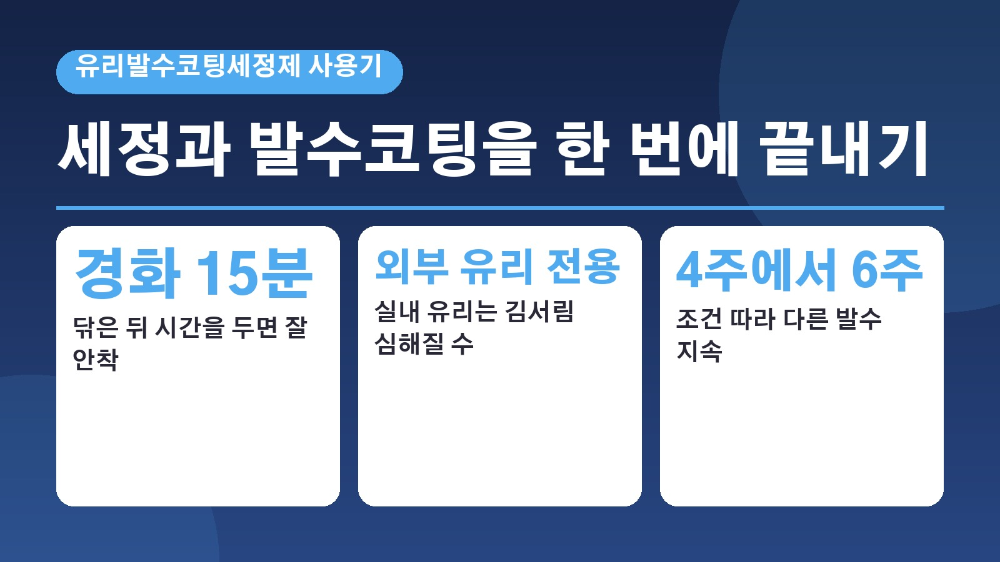
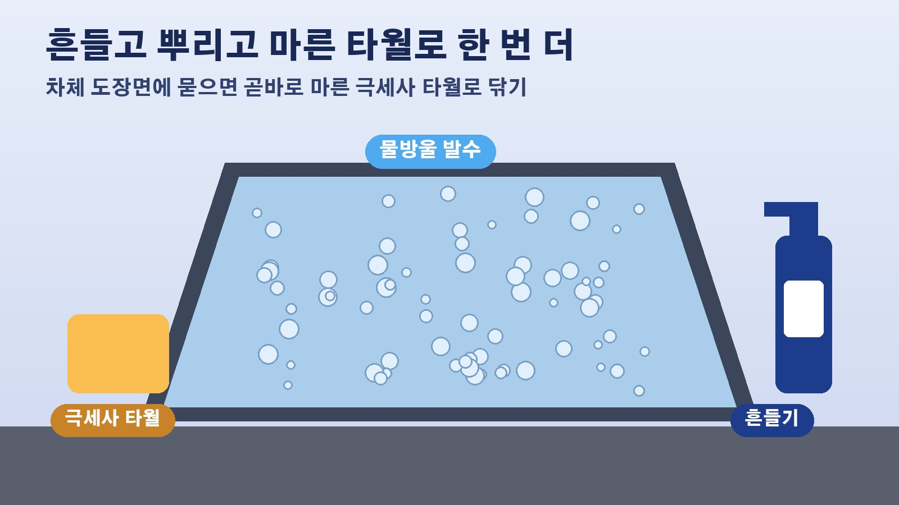

유막 제거 뒤 발수코팅까지 한 번에, 소낙스 2in1 유리발수코팅세정제 사용기에서 짚은 사용법과 주의점

비 오는 날 와이퍼를 아무리 돌려도 앞유리가 뿌옇게 번지면 운전이 꽤 불안하죠. 그래서 세차할 때 유리 세정제로 닦고, 따로 발수코팅제를 올리고, 심하면 유막 제거까지 하게 되는데요. 이 과정이 번거롭고 용품값도 만만치 않습니다. 10월 13일 리뷰타임스에 세정과 발수코팅을 한 번에 하는 소낙스 익스트림 세라믹 2in1 유리발수코팅세정제 사용기가 실렸는데요. 셀프세차 때 참고할 만한 순서와 주의점을 정리해 봤습니다.
세정제와 발수코팅제를 하나로 합친 제품
이 제품은 유리 표면의 찌든 때와 오염물을 닦아 내는 세정제 역할을 하면서 동시에 매끈한 발수 보호막을 만들어 주는 2in1 제품입니다. 원래라면 세정과 코팅을 두 번에 나눠 해야 하는데 한 번에 끝나니 세차 시간이 크게 줄어든다는 게 리뷰어가 꼽은 가장 큰 장점이에요. 용량은 750ml로, 보통 자동차용 케미컬이 500ml인 경우가 많은 것에 비하면 넉넉한 편이라고 합니다.
리뷰어가 따라 한 순서
리뷰어의 차는 유막 제거를 한 지 6개월쯤 지나 물이 튀면 뿌옇게 보이는 상태였습니다. 먼저 본세차를 하면서 카샴푸로 앞유리를 닦았고, 제품 성능을 제대로 보려고 유막 제거도 했어요. 이번에는 광택기를 이용해 유막을 편하게 벗겨 냈고, 고압수로 유막제거제를 씻어 내니 유리가 물이 고르게 퍼지는 친수 상태가 됐다고 합니다. 그다음 제품을 넉넉하게 뿌리고 유리용 타월로 잘 닦은 뒤 약 15분 정도 경화 시간을 줬는데, 그래야 더 잘 안착된다고 설명했습니다.
사용법은 흔들고 뿌리고 두 번 닦기
기사에 정리된 사용법은 간단합니다. 쓰기 직전에 용기를 충분히 흔들고, 보풀 없는 깨끗한 극세사 유리용 타월에 제품을 충분히 뿌린 다음 유리를 닦아 냅니다. 핵심은 마무리인데요, 타월의 마른 면이나 새 극세사 타월로 한 번 더 문질러 남은 자국 없이 깨끗하게 끝내야 한다고 해요. 작업하다 차체 도장면에 제품이 묻었다면 곧바로 마른 극세사 타월로 닦아 내라고 안내하고 있습니다. 리뷰어는 사용법이 쉬워 셀프세차 초보자도 손쉽게 시공할 수 있다고 평가했어요.

실내 유리와 헬멧 바이저에는 쓰지 말 것
꼭 알아 둘 주의점이 하나 있습니다. 이 제품은 차량 외부 유리 전용이라 실내 유리나 헬멧 바이저에는 절대 쓰면 안 된다고 해요. 실내 유리에 바르면 발수 성능 때문에 습기가 찼을 때 김서림이 오히려 심해질 수 있기 때문입니다. 안쪽 유리는 기존에 쓰던 유리 세정제를 쓰면 된다고 기사는 설명합니다.
지속 기간은 최대 4주에서 6주, 조건에 따라 달라
제조사 설명에 따르면 한 번 시공하면 최대 4주에서 6주 동안 발수 성능이 이어집니다. 다만 주행 환경과 세차 횟수, 와이퍼 사용량, 워셔액 종류에 따라 차이가 생긴다고 리뷰어는 덧붙였어요. 시공 후 약 3일이 지난 유리도 깨끗한 상태였는데, 보호막이 벌레 자국이나 새 배설물, 눈과 얼음이 유리에 잘 달라붙지 않게 해 주는 방오 효과 덕분이라고 설명했습니다. 이 글은 한 리뷰어의 직접 사용 후기를 바탕으로 한 것이라, 실제 체감은 차 상태에 따라 다를 수 있다는 점도 함께 참고하시면 좋겠습니다.
참고한 기사: 리뷰타임스 제품 리뷰 발수코팅과 세정을 한번에 소낙스 익스트림 세라믹 2 in 1 유리발수코팅세정제 사용기 2026년 10월 13일
태그
유리발수코팅 유막제거 소낙스 셀프세차 세차용품 발수코팅제 유리세정제 앞유리관리 세차팁 디테일링